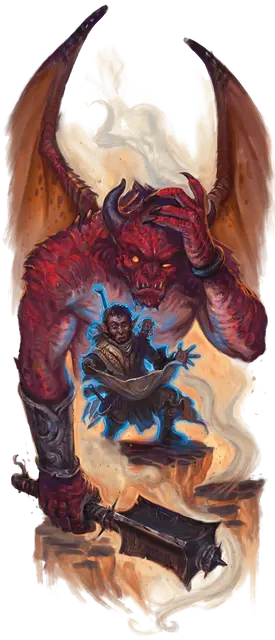

Планарный странник
Planar Wanderer
Требование: 4 уровень, черта «Наследник внешних планов»

Вы можете использовать силы мультивселенной, чтобы выжить в космических экстремальных условиях и пересечь её бесконечные миры. Вы получаете следующие преимущества:
Планарная адаптация. Когда вы оканчиваете продолжительный отдых, вы получаете сопротивление урону кислотой, холодом или огнём (на ваш выбор), пока не окончите следующий продолжительный отдых.
Взломщик порталов. Ваш опыт работы с порталами позволяет вам управлять ими без соответствующего ключа портала. Действием вы можете сконцентрироваться на известном вам портале, который находится в пределах 5 футов от вас и совершить проверку Интеллекта (Магия) Сл 20. При провале вы получаете 3к8 урона силовым полем и не можете снова использовать эту черту на этом портале, пока не окончите продолжительный отдых. При успехе вы можете принудительно открыть или закрыть портал на 1 час. В течение этого времени портал, закрытый таким образом, не отвечает на свой ключ портала, если существо, использующее ключ, действием не преуспеет в проверке Интеллекта (Магия) Сл 20.
Чувство порталов. Вы знаете направление к последнему планарному порталу, который вы использовали, пока вы и портал находитесь на одном плане. Кроме того, действием вы можете обнаружить местоположение любых порталов в пределах 30 футов от вас, которые не находятся за полным укрытием. Как только вы обнаружите портал этим действием, вы не сможете использовать это действие снова, пока не окончите продолжительный отдых.